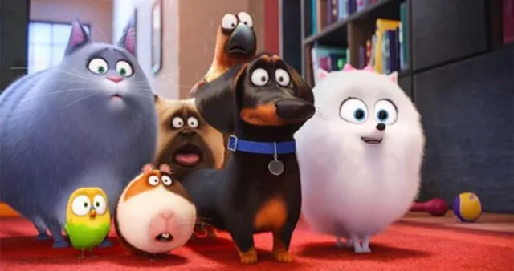
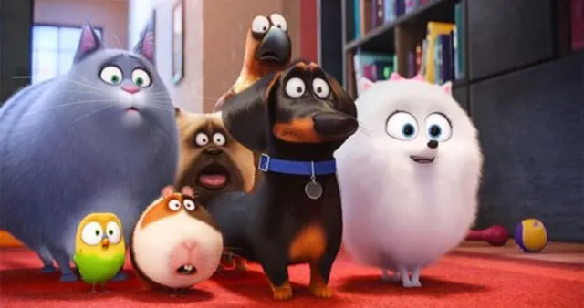

Mascotas
es una divertida comedia animada que explora lo que hacen las mascotas cuando sus dueños no están en casa. La historia se centra en Max, un perro terrier que vive felizmente con su dueña en Nueva York, hasta que su vida da un giro inesperado con la llegada de Duke, un enorme y desordenado perro que se convierte en su nuevo "hermano". Ambos perros, inicialmente rivales, terminan perdiéndose en la ciudad y enfrentándose a una serie de aventuras, incluyendo un encuentro con un grupo de animales callejeros liderados por Snowball, un conejo rebelde y carismático. A lo largo de la película, Max y Duke deben aprender a trabajar juntos para regresar a casa, mientras sus amigos mascotas emprenden una misión para rescatarlos. Es una película llena de humor, acción y momentos conmovedores que celebra la amistad y el vínculo especial entre humanos y animales. Ideal para toda la familia.
Menu Principal 
